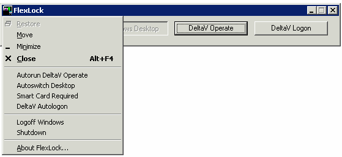

FlexLock
The FlexLock application provides the same secure operating environment through the remote connection as it does on a normal DeltaV workstation. Users with remote Windows desktop access and the necessary DeltaV privileges can launch most DeltaV applications through the Windows Start menu, if they are connected to a remote session with an appropriate license. (Note, however, that any user who logs on to a terminal session that is licensed only for operator control will be restricted to operator functions, regardless of their own user privileges.)Typically, operators are restricted to the DeltaV Operate system, and the other buttons will be inactive on the FlexLock dialog.
Note: It is possible that a Remote Client session running FlexLock does not appear on the Processes tab of the Windows Task Manager. If it is necessary to close FlexLock (for instance, to uninstall the DeltaV system), select the Show processes from all users check box on the Task Manager Processes tab. Then select and end the process DeskTop.exe, which is the FlexLock name in the process list.
You can access online help for FlexLock by pressing F1.

Related information